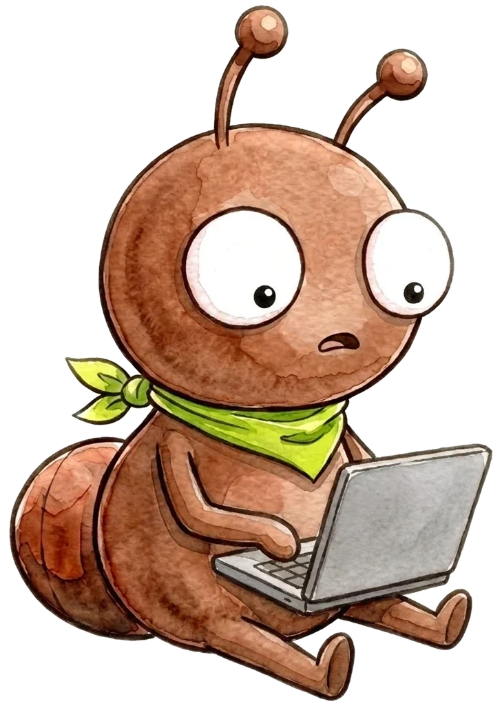
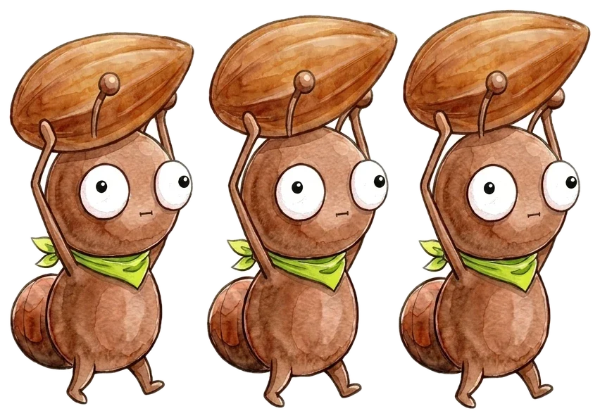
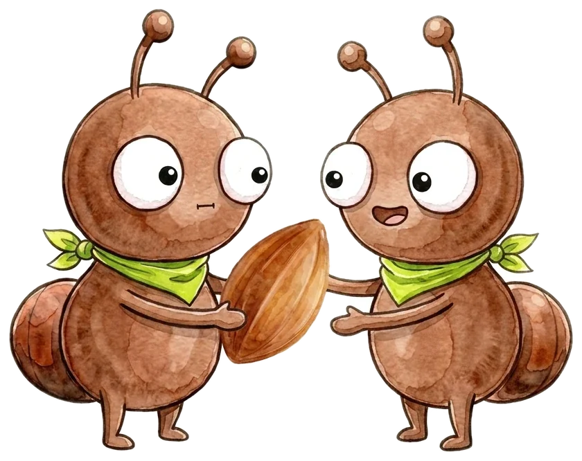

A daily habit, not a monthly one
A card gets opened at checkout. Agents run every day, and every request is paid from your app.


Give your users one API key for the top AI models, at network prices, paid from the balance they already hold with you.
Part 1 · The opportunity
AI is a line item now Chat subscriptions and AI tools show up on card statements every month, at a merchant that isn’t you.
Agents pay by the request Agents don’t buy subscriptions. They call APIs all day, and each one needs a key and a balance to pay from.
You hold the balance Your users keep stablecoins with you. Today that money leaves your app to pay for AI. It doesn’t have to.


Part 1 · The opportunity
Antseed brings
920 models through one API: Claude, GPT, DeepSeek, Kimi, GLM and more.
Your user gets
Providers compete on price, so your users pay less than the lab.
You add
Cashback, tiers or points on AI spend: a reason to keep the money in your app.
Plus: $ANTS rewards on usage The usage you bring earns you $ANTS rewards. Keep them, or pass them on as more cashback.
Part 2 · How it works
Your device finds providers over Mainline DHT, the same network BitTorrent uses, talks to them directly, and pays per request. Nobody sits in the middle.
920 models Through one API key.
Providers compete On price, so you pay less than the lab.
Signed responses Every response is signed and checked against the model fingerprint.
Failover If one provider goes down, your request moves on to another.
Verification: signatures matched to the model fingerprint are strong evidence of the model served, not cryptographic proof.
Data handling: requests run from your own gateway directly to the provider you choose. As Solid describes its implementation, prompts and answers are not stored — only usage counts for billing (solid.xyz, 12 Nov 2026).


Part 2 · How it works
Deploy your own endpoint with the Antseed Gateway and give each customer, and each of their agents, their own API key.
Access To 920 models at lower prices.
Control Choose providers, budgets and manage access.
Console Track balances and usage from one console.
Cashback base Usage per key is the base for your cashback.


Solid shows how. Your users are ready for it.